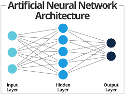
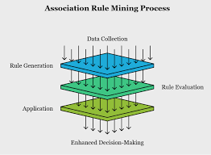
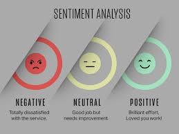
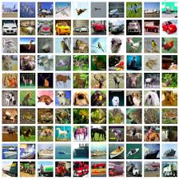

Projects
Machine learning projects applying predictive models and algorithms to identify patterns, optimize performance, and generate data-driven insights.

Machine learning projects applying predictive models and algorithms to identify patterns, optimize performance, and generate data-driven insights.

Built a neural network model to evaluate player performance data and support optimal team selection.

Applied Apriori to analyze transactional data and uncover meaningful purchase patterns.
Built a forecasting model to analyze historical temperature data and predict future climate trends.
Built a forecasting model to analyze historical temperature data and predict future climate trends.
Applied machine learning models to analyze household energy data and predict usage patterns.

Analyzed review data using sentiment analysis to identify customer opinion trends across hotels.
Built a convolutional neural network to classify image data using deep learning techniques.

Applied K-Means clustering to analyze retail data and identify customer segments.

Built and optimized a deep learning model to classify image data and benchmark performance.
Built an LSTM model to analyze time series data and predict stock price movements.